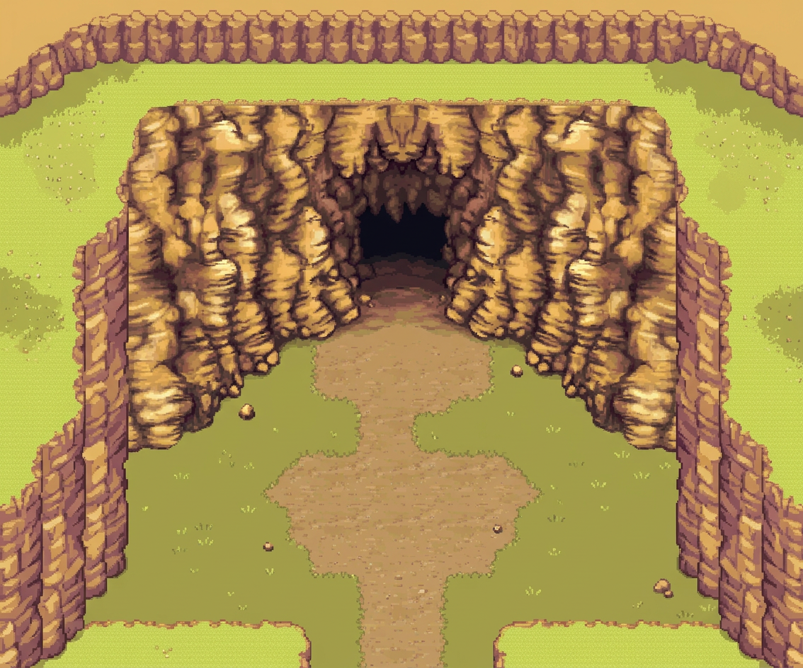
01 · Antre encaissé
1134 × 944 px · PNG original · Nuit Abyss · GitHub
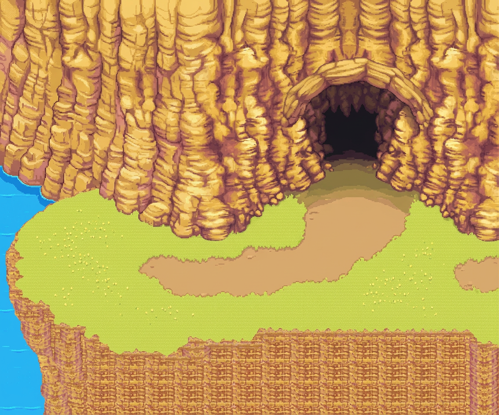
02 · Grotte sur corniche
1134 × 944 px · PNG original · Nuit Abyss · GitHub
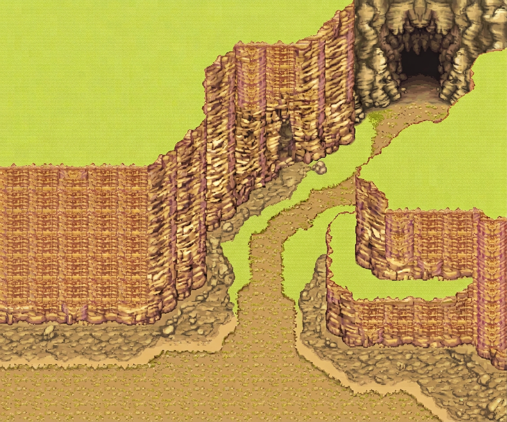
03 · Défilé du donjon
1134 × 944 px · PNG original · Nuit Abyss · GitHub
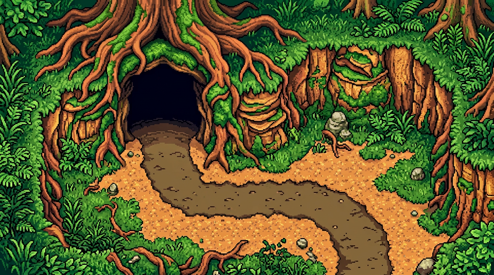
04 · Forêt des racines
1376 × 768 px · PNG original · Nuit Abyss · GitHub
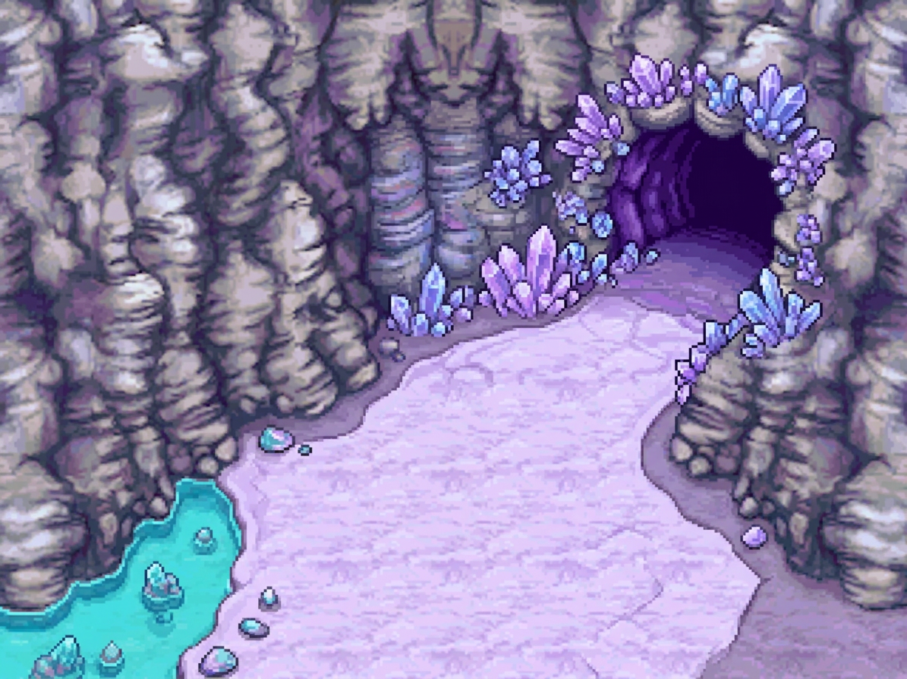
05 · Caverne des cristaux
1195 × 896 px · PNG original · Nuit Abyss · GitHub
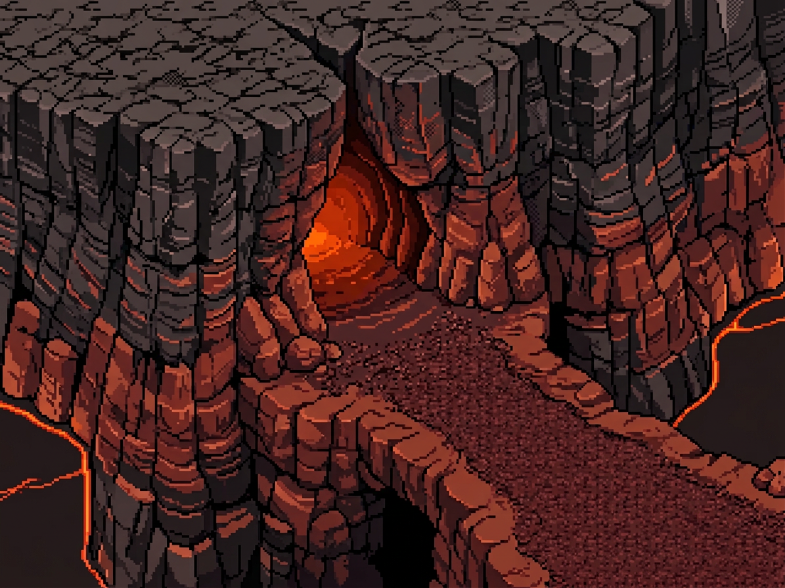
06 · Antre du volcan
1195 × 896 px · PNG original · Nuit Abyss · GitHub
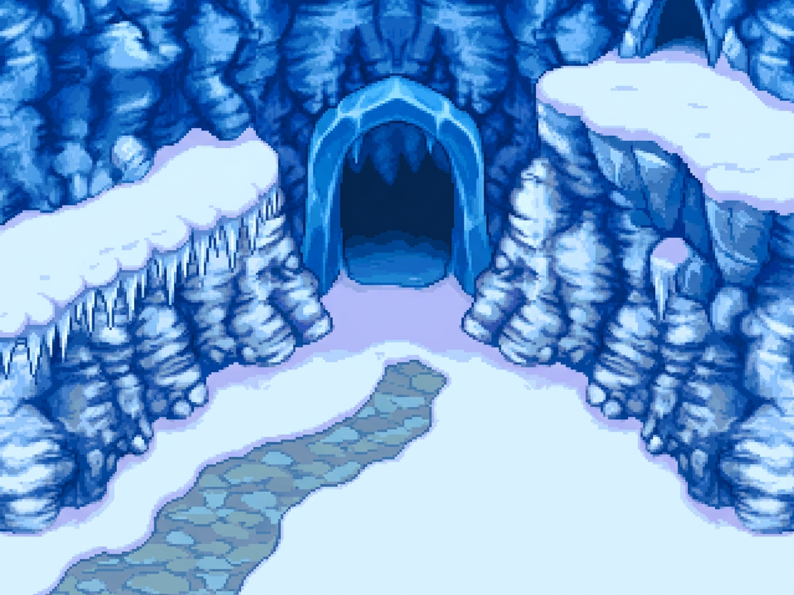
07 · Grotte du givre
1195 × 896 px · PNG original · Nuit Abyss · GitHub
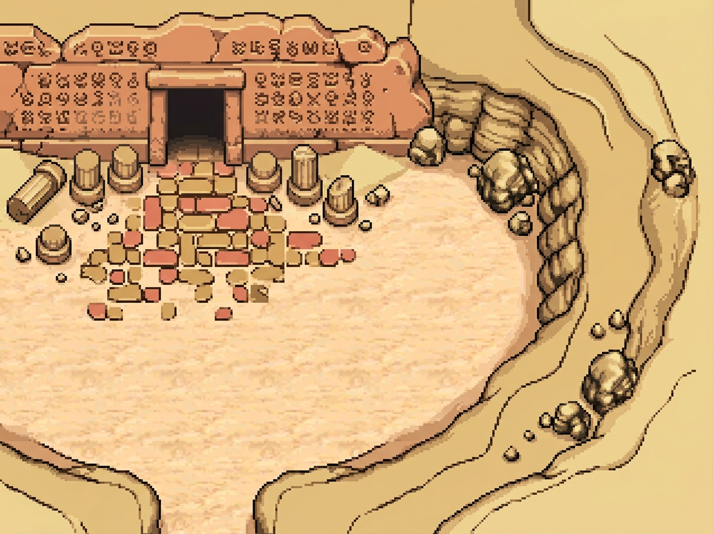
08 · Ruines ensablées
1195 × 896 px · PNG original · Nuit Abyss · GitHub
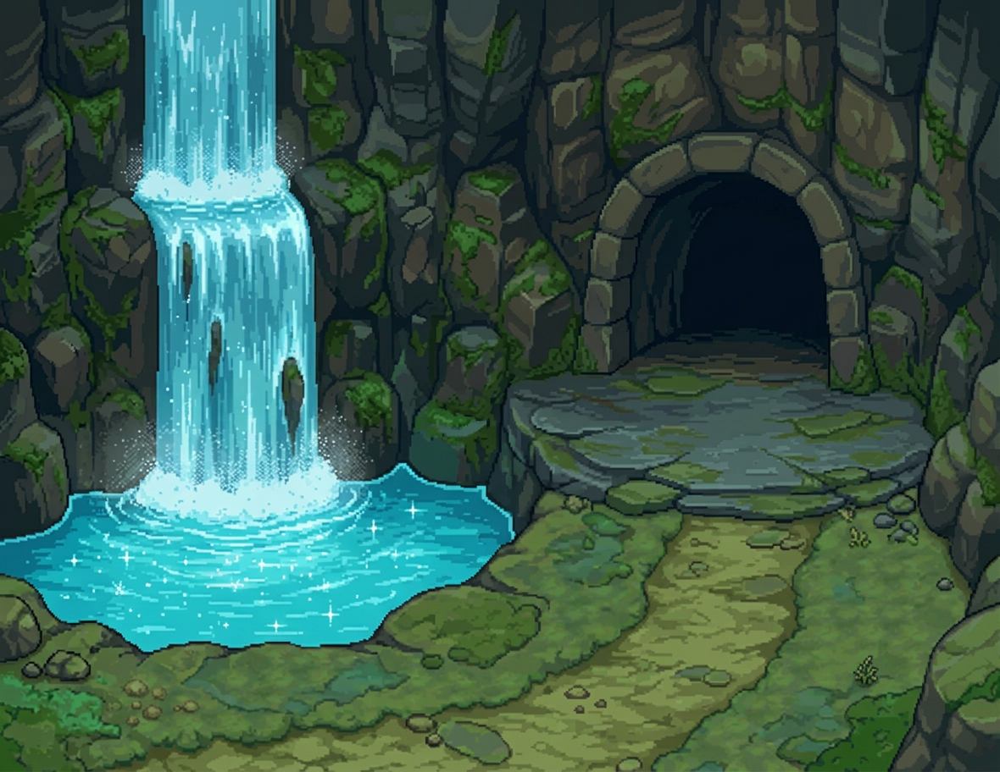
09 · Caverne de la cascade
1180 × 912 px · PNG original · Nuit Abyss · GitHub
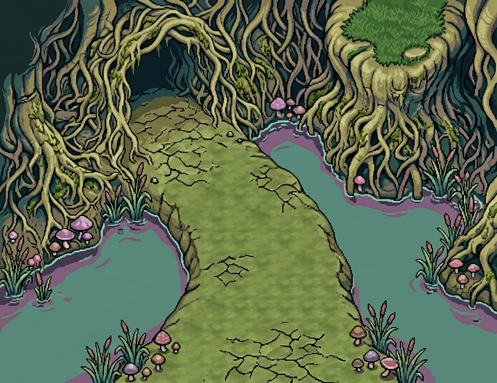
10 · Passage du marais
1180 × 912 px · PNG original · Nuit Abyss · GitHub
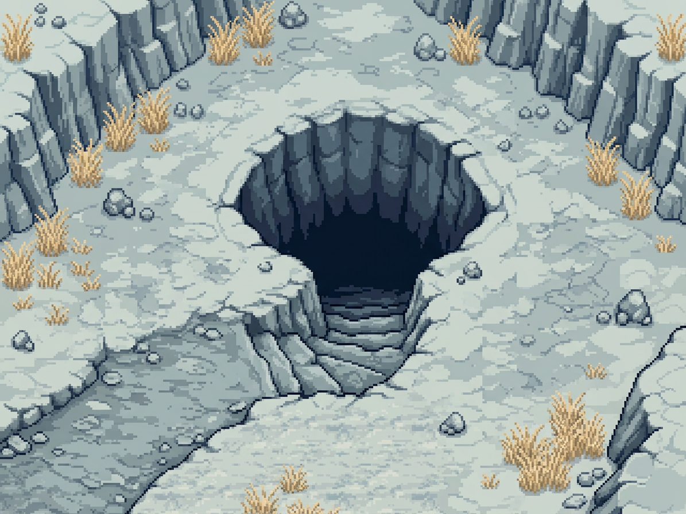
11 · Gouffre du plateau
1195 × 896 px · PNG original · Nuit Abyss · GitHub
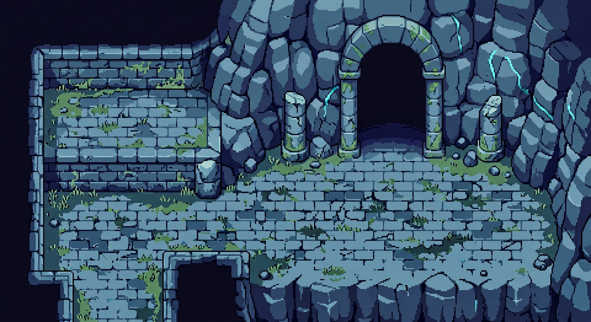
12 · Sanctuaire lunaire
1408 × 768 px · PNG original · Nuit Abyss · GitHub